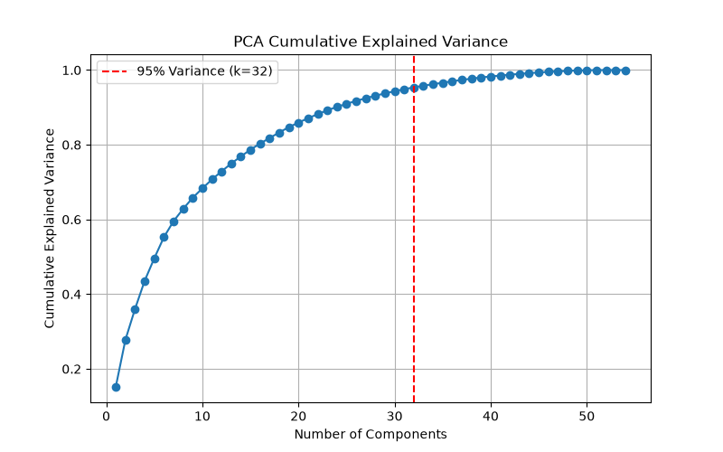

The objective was to find a 256-dim style tensor that makes Kokoro sound like the target speaker without fine-tuning any weights. A naive random walk maximizing Resemblyzer similarity is prone to 'fitness gaming', where degraded, raspy audio scores artificially high.
To combat this, we developed a composite fitness function and a manifold-constrained search strategy.
We ran PCA on the 54 stock voices. We discovered that ~32 components explain 95% of the variance in the voice space.

By forcing our search to strictly project candidates back onto this PCA subspace, we completely eliminate the risk of wandering into undefined tensor regions (which usually result in the raspy audio that similarity models love).
Our approach dominates a naive similarity-only random walk because it:
dim_groups.json, our Simulated Annealing optimizer took larger steps on dimensions proven to affect timbre, while making smaller steps on prosody-linked dimensions, making the most of the ~150 evaluation budget.